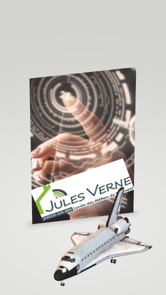

Une Web experiences de réalité augmentée
AR.js Studio est une application open source de création facile d'application de réalité augmentée au travers d'une page web. on peut créer une application basée sur la géo-localisation ou l'utilisation d'un marqueur. Pas besoin de logiciel ni de connaissance en codage pour votre experience!
Sélectionner le type de projet
Oups! selectionner type de projet.